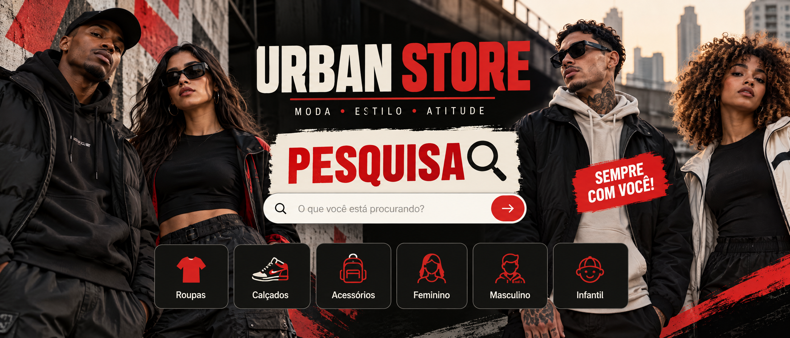

MODA • ESTILO • ATITUDEURBAN
URBAN
STORE
⌕ PESQUISA
Explore peças urbanas e ajude a construir novas escolhas de estilo. Sua opinião faz parte desta pesquisa acadêmica voluntária.
Explorar peças ↗
SEMPRECOM VOCÊ!
Escolha uma peça.
Deixe sua leitura.
Avalie produtos e contribua para a pesquisa sobre preferências de moda.
Nenhuma peça encontrada.
PESQUISA VOLUNTÁRIASeu olhar
Seu olhar
move a cidade.
Cadastre-se gratuitamente para participar. Você pode navegar pela loja sem participar e revogar o consentimento quando quiser.
01
Veja
Descubra roupas, calçados e acessórios.
02Avalie
Compartilhe sua percepção com nota e comentário.
03Contribua
Ajude a pesquisa acadêmica com segurança.
TRANSPARÊNCIA EM PRIMEIRO LUGARFeito para ouvir,
Feito para ouvir,
não para pressionar.
A participação é voluntária. Seus dados são usados somente para as finalidades apresentadas no cadastro e tratados com cuidado, conforme a LGPD.